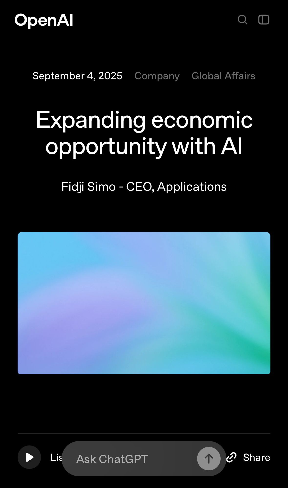

בעולם שבו לינקדאין הפכה להיות שער הכניסה לעבודה, OpenAI מנסה לנסח מחדש את הכללים.
פורסם במקור ב LinkedIn
בעולם שבו לינקדאין הפכה להיות שער הכניסה לעבודה, OpenAI מנסה לנסח מחדש את הכללים.
הכרזה טרייה של החברה מציעה לא פחות מאשר מתחרה ישירה ללינקדאין. פלטפורמת משרות שתתבסס על AI ותשדך בין עובדים לחברות לא רק לפי קורות חיים או רשימת כישורים, אלא לפי מה שהטכנולוגיה מזהה כיכולת אמיתית להביא ערך.
הרעיון פשוט אבל חתרני: אם עד היום זירת העבודה נשלטה על ידי אלגוריתמים של רשתות חברתיות, שמקפיצות משרה אחת ומסתירות אחרת, כאן האלגוריתם מבטיח להיות חכם יותר, להבין גם את מה שאדם יודע לעשות בפועל, גם אם זה לא רשום בשורה מסודרת בקובץ PDF.
המהלך הזה מגיע עם יוזמה נוספת: הסמכות רשמיות בתוך ChatGPT עצמו, מהכשרה בסיסית ועד Prompt Engineering, שנועדו להעניק לעובדים "חותמת" של מיומנות ב-AI. אם לינקדאין הציגה במשך שנים קורסים וסמלים של השלמת מיומנויות, כאן מדובר באינטגרציה עמוקה יותר תעודה שנוצרת ישירות מתוך השימוש בכלי העבודה עצמו.
מדובר בניסיון להזיז את מרכז הכובד של שוק העבודה: ממסמכים והמלצות אל עבר הוכחה בזמן אמת של יכולת. בין אם היוזמות האלו יצליחו או לא, הן מאותתות על שינוי תפיסתי שעולם הקריירה כבר לא נשען רק על קשרים מקצועיים, אלא גם על נגישות לטכנולוגיה שמעצבת מחדש את המגרש כולו.
מתוך המאמר:
אנחנו מתמקדים בשתי יוזמות מרכזיות:
1. פלטפורמת משרות OpenAI
עסקים שמחפשים עובדים עם הבנה ב-AI, או עזרה במשימה מסוימת, מתקשים למצוא התאמה נכונה. הפלטפורמה תציג מועמדים מנוסים בכל הרמות ותספק הזדמנויות לכל מי שרוצה לנצל את כישוריו. נשתמש ב-AI כדי להתאים בצורה הטובה ביותר בין מה שחברות צריכות לבין מה שעובדים יכולים להציע.
הפלטפורמה לא תהיה רק לחברות ענק - היא תכלול גם מסלול לעסקים מקומיים וממשלות מקומיות. לדוגמה, התאחדות העסקים של טקסס רוצה להשתמש בה כדי לחבר אלפי מעסיקים עם אנשים שיכולים לעזור להם להתחדש.
2. הסמכות OpenAI
כל מי שמחפש להעסיק צריך לדעת שהמועמדים באמת מבינים ב-AI. מחקרים מראים שעובדים שמיומנים ב-AI הם בעלי ערך גבוה יותר, פרודוקטיביים יותר ומרוויחים יותר. לכן הקמנו השנה את OpenAI Academy - פלטפורמת לימוד חינמית שחיברה כבר מעל 2 מיליון אנשים עם כלים, סדנאות וקהילות כדי לשלוט ב-AI.
עכשיו אנחנו מרחיבים את האקדמיה עם הסמכות לפי רמות שונות - משימוש בסיסי ועד Prompt Engineering. כל אחד יוכל להתכונן להסמכה ב-Study Mode של ChatGPT ולקבל תעודה מבלי לצאת מהאפליקציה. חברות יוכלו לשלב זאת בתוכניות הפיתוח שלהן.
OpenAI מתחייבת להסמיך 10 מיליון אמריקאים עד 2030
השאלה שנותרה פתוחה היא איך ייראה האיזון בין ההבטחה הדמוקרטית של נגישות ל-AI לבין הכוח החדש שמרוכז בידי חברות שמחליטות אילו מיומנויות "שוות" יותר מאחרות.
